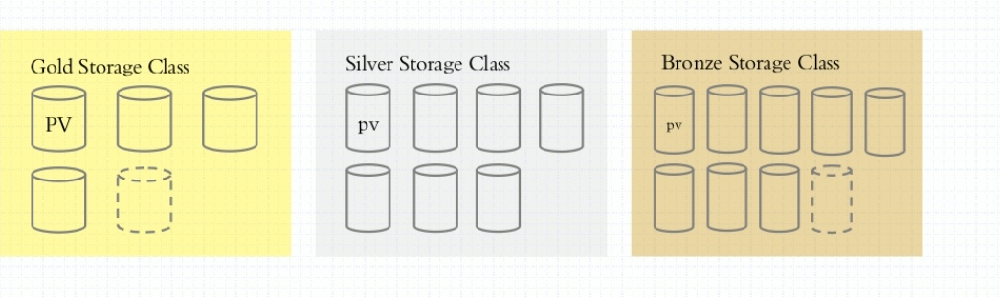
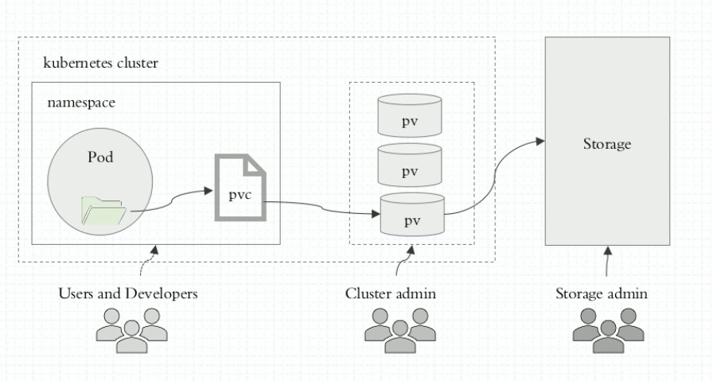

K8S存储卷
存储分类
- 基础架构容器
- emptyDir 生命周期同pods
- hostPath 宿主机路径
- SAN iSCSI,
- NAS nfs,cifs
- 分布式存储: glusterfs, ceph, cephfs
- 云存储: EBS,Azure Disk,
- 
- 使用途经

PVC逻辑

- 
- pvc属于名称空间
- pv属于全体空间
- pvc的ACCESS_MODE是pv的子集
- pvc保存在etcd中
配置容器化应用的方式
- 自定义命令行参数 args[]
- 把配置文件直接备进镜像
- 环境变量
- Cloud Native应用程序一般可直接通过环境变量加载配置
- 通过entrypoint脚本来预处理变量为配置文件的配置信息
- 存储卷 //TODO
- ConfigMap将配置文件从镜像中解耦